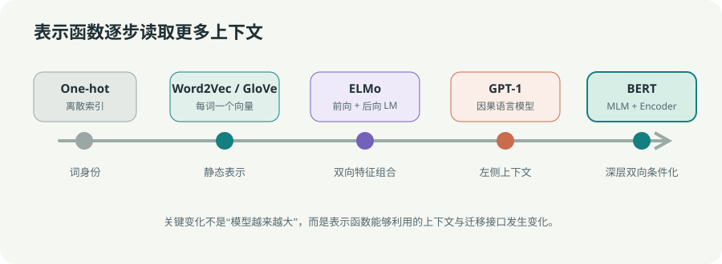

1. 一个词为什么需要上下文
看下面两个句子：
- The river bank was covered with grass. —— bank 指河岸。
- She deposited the check at the bank. —— bank 指银行。
词面完全相同，语义却不同。如果模型只把字符串 bank 映射到一个固定向量，那么这两个位置在输入层拿到的就是同一个向量。后续网络当然还能结合其他 token 推断句意，但词本身的初始表示并没有区分这两种用法。
这引出表示学习的核心问题：模型要学习的是“词是什么”，还是“词在当前句子里是什么意思”？早期词向量主要解决前者；上下文表示模型把后者也纳入了表示函数。

2. 静态表示解决了什么
2.1 从 one-hot 到稠密向量
假设词表大小为 V。one-hot 表示把每个词编码为 V 维向量，只有词对应的位置为 1，其余位置为 0。它能唯一标识词，却没有表达词与词之间的语义关系：两个不同词的 one-hot 向量彼此正交，距离不会体现“猫”和“狗”比“猫”和“微积分”更接近。
Word2Vec 将词表示为低维稠密向量。CBOW 根据上下文预测中心词；Skip-gram 根据中心词预测周围词。训练目标迫使经常出现在相似上下文中的词获得相似表示。训练完成后，模型中的词向量可作为下游网络的输入特征。
2.2 共现统计与子词信息
GloVe 从全局词—词共现统计中学习向量，把局部上下文信息与全局统计关系结合起来。FastText 则把词拆成字符 n-gram，让词向量由多个子词单元共同构成，因此对拼写相似的词和训练时未完整出现过的词更有处理能力。
这些方法都建立了重要的工程基础：把离散符号转换成可计算的连续向量，使相似性、线性模型和神经网络能够在同一表示空间里工作。但在典型静态词向量方案中，一个词条对应的向量不会因当前句子改变。
3. 静态词向量的边界
静态表示的局限不等于“向量维度不够”。即使把向量从 100 维扩大到 1000 维，只要表示仍是查表函数 e(w)，同一个词在不同句子中的初始向量仍相同。
h_t=f(x_1,…,x_T)，其中位置 t 的向量取决于整段输入。
静态向量并没有因此失去价值。它们体积小、可缓存、计算成本低，在资源受限、词义变化不敏感或需要轻量特征的场景仍可能合适。问题在于：当任务需要词义消歧、句法角色或跨句关系时，固定词向量通常不够。
4. ELMo：把上下文带进表示
ELMo（Embeddings from Language Models）由 Peters 等人在 2018 年提出。它使用字符级 CNN 构造词的初始表示，再通过多层双向语言模型产生上下文状态。前向语言模型按从左到右的顺序预测下一个 token；后向语言模型按相反方向预测前一个 token。两套方向模型各自建模，随后把对应位置的状态组合起来，作为下游任务的特征。
ELMo 的一个重要设计是：下游任务不必只取最后一层。模型为字符表示和各层双向状态学习任务相关的加权系数，使任务可以组合不同层捕获的语言信息。其一般形式可写为：
这里的层权重由具体下游任务学习；该式表达分层组合思想，不是某个固定词的数值结果。
因此，把 ELMo 简化成“两个 LSTM 拼起来”会遗漏它的迁移接口：ELMo 主要把预训练表示作为特征加入任务模型，而不是像 BERT 那样把整套编码器参数作为下游模型的初始化并端到端微调。
5. GPT-1：沿着因果方向建模
OpenAI 在 2018 年提出的 GPT-1 使用 Transformer 的 decoder 式结构，并通过自回归语言模型目标进行预训练。对位置 t，模型只利用前面的 token 来预测当前 token，可写作：
这种因果约束与生成任务天然匹配：生成到当前位置时，未来 token 尚不可见。GPT-1 同样采用“先在无标注文本上预训练，再用有标注数据微调”的迁移路线。它与 BERT 的差别不在于是否使用 Transformer，而在于预训练时注意力允许读取哪些位置，以及学习目标如何定义。
因果方向不是缺陷的同义词。它让模型可以按顺序生成文本；但在需要同时利用目标 token 左右两侧信息的理解任务中，单向表示受到结构性限制。
6. BERT：在深层网络中联合利用左右文
BERT 使用 Transformer encoder，并以 Masked Language Modeling（MLM）训练双向表示。训练时随机选取一部分输入 token 作为预测目标，对输入做替换或保留；编码器读取整段可见上下文，预测被选位置的原始词表 ID。由于目标 token 不直接以原样出现在输入中的大多数被选位置，模型需要利用其左右文来恢复目标。
BERT 论文明确区分了三种路线：ELMo 把独立训练的左右向语言模型状态浅层组合；GPT 使用左到右的 Transformer 语言模型；BERT 则在每一层都使用左右上下文构建表示。BERT 还将预训练与微调统一到同一套编码器参数上：针对不同任务增加相应输出层，并继续更新预训练参数。
这也解释了 BERT 的适用边界：标准 BERT encoder 不是一个按 token 自回归生成的 decoder。若目标是自然语言理解、句对关系、序列标注或抽取式问答，双向上下文很有价值；若目标是逐 token 生成，就需要采用适合生成的解码结构或其他建模方式。
7. 四种范式如何区分
| 方法 | 位置表示 | 上下文方向 | 迁移接口 | 典型用途 |
|---|---|---|---|---|
| Word2Vec / GloVe | 词表查表 | 静态；向量不随句子变化 | 作为下游模型输入特征 | 轻量语义特征、相似词 |
| ELMo | 字符 CNN + 双向 LSTM 状态 | 左右方向分别建模，再组合 | 上下文特征注入任务模型 | 序列标注、问答等理解任务 |
| GPT-1 | Transformer decoder 状态 | 因果方向，只看左侧 | 预训练参数微调 | 语言建模与生成 |
| BERT | Transformer encoder 状态 | 深层双向注意力 | 预训练参数微调 | 分类、句对理解、标注、问答 |
这张表描述的是这些工作的原始设计，不代表所有后续模型都严格遵循同一配方。后来出现的模型会调整训练数据、目标函数、tokenizer、模型结构与部署方式。
8. 交互：同一个 bank，表示会不会改变
下面的示意不运行真实神经网络，而是帮助区分两种表示函数。静态词向量对同一词条执行同一次查表；上下文编码器则根据整句计算该位置的 hidden state。
选择 bank 出现的语境
观察“词条查表”与“上下文计算”两种机制的区别。
句子：The river bank was covered with grass. 静态词向量：查表 bank → 同一个 e_bank 上下文表示：h_bank = Encoder(整句, bank 所在位置) 解释：当前上下文包含 river 与 grass，帮助模型解释 bank 的用法。
关键结论
- 静态词向量解决了离散词符号的稠密表示问题，但单个词条的向量不随上下文变化。
- ELMo 把左右向语言模型特征组合起来；GPT-1 采用因果语言模型；二者的上下文方向与迁移接口不同。
- BERT 的关键创新是深层双向 Transformer 表示与预训练—微调范式，而不是简单地“用了注意力”。
原始资料与延伸阅读
- Mikolov et al., Distributed Representations of Words and Phrases and their Compositionality, 2013.
- Pennington et al., GloVe: Global Vectors for Word Representation, 2014.
- Peters et al., Deep Contextualized Word Representations, 2018. 重点：§3.1–3.3。
- Radford et al., Improving Language Understanding by Generative Pre-Training, 2018.
- Devlin et al., BERT: Pre-training of Deep Bidirectional Transformers for Language Understanding, 2018/2019. 重点：§1、§2、Appendix A.4。